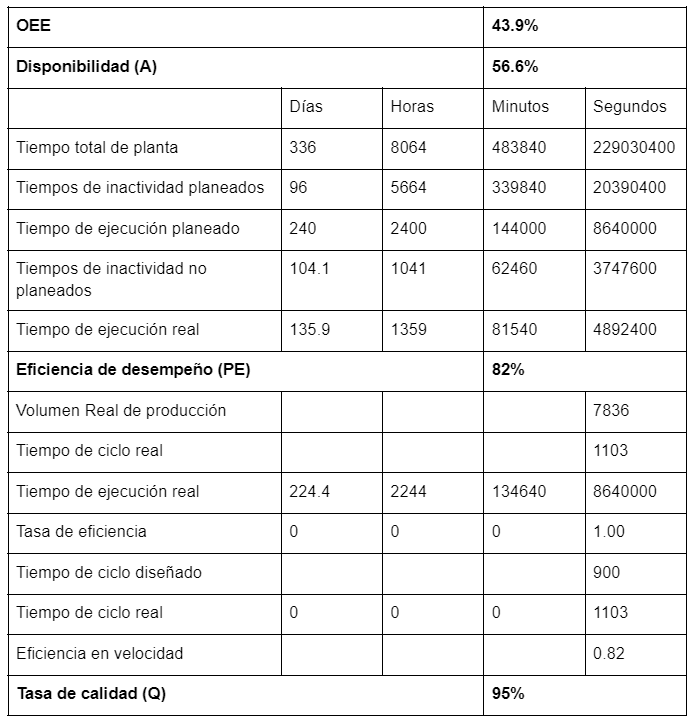

Gestión de la Producción
Datos Planta Base
Para este caso se toma como referencia una empresa que maneja lámina de acero para sus productos, en este caso solo se toma de referencia los tiempos que se manejan actualmente en la planta. El nombre de la empresa es FACCEL SAS, empresa dedicada a la fabricación de tableros y celdas como insumos para la industria eléctrica en la ciudadela industrial de Duitama en el departamento de Boyacá.
Nota: se realizan ajustes al tiempo dado por FACCEL según el tipo de producto, debido a la cantidad de dobleces (doblado) y el tamaño del producto (pintado y horneado).
Distribución (Diagrama de flujo de procesos)
En este caso el Lavado y alistamiento de las máquinas está implícito en el recuadro de corte.
Tabla de equipos - procesos
Tabla de materiales
Etapas - Procesos
Gráficas y simulación en plant simulation de la planta base
Así se puede ver que a través de la simulación en el software de Tecnomatix que al día se producen 32 sillas(Portalibros o escaleras) en condiciones de calidad óptimas entre 1 y 2 para reprocesar o venderla por una calidad inferior. Además se observa que las estaciones de limpieza y corte láser se encuentran bloqueadas porque en general sus procesos son mucho más cortos que los de las demás máquinas. También se puede ver que un cuello de botella es el doblado ya que es la estación en la que la proporción entre tiempo de bloqueo y tiempo de espera se invierten. El pintado es otro punto del proceso que genera un cuello de botella ya que se encuentra la mayoría del tiempo trabajando y en falla por esto esto coloca las estaciones anterior y siguiente en bloqueo y espera respectivamente. El Horno y todas las estaciones siguientes pasan la mayoría de su tiempo en espera a causa del cuello de la estación de pintura.
Algunos tiempos de transporte son elevados debido a que al momento de hacer un levantamiento de los datos iniciales la empresa se divide en dos bodegas industriales colindantes pero no conectadas directamente.
Se realizó una investigación de los tiempos posibles de falla de cada una de las máquinas del proceso, esto puede verse en el archivo de excel anexo “Tiempos Falla y KPI Planta Base” en este se pueden ver los enlaces en los cuales se basó la estimación o definición de los tiempos de falla. De esta misma forma se obtienen los resultados para los otros dos productos así
Posteriormente con estos datos es necesario obtener los indicadores de desempeño de la planta base. En la siguiente tabla se puede ver que el OEE de la planta está sobre el 40% lo que supone una planta mediana promedio de latinoamérica e incluso puede ser un poco más prometedora que el promedio. Según lo comentado por la fuente de información de la planta base la calidad puede estar sobre un porcentaje de 95% y según el tiempo de ejecución planeado y el tiempo de las fallas e inactividad no planeada se obtiene una disponibilidad de 56.63%. Por último la eficiencia de desempeño que cuantifica qué tan rápido se hacen realmente al comparar los tiempos de ciclo planeados y reales tiene un valor de 82%.
VSM Planta base

Datos en el documento de la planta mejorada
Para proponer la implementación de mejoras de la planta es necesario primero definir los puntos que desean evaluarse de acuerdo a el análisis realizado anteriormente con la planta base. Los aspectos clave identificados por el equipo de trabajo son:
- Distribución ineficiente de la planta, estaciones distantes y división de tareas requeridas para un producto, cruce de líneas de flujo que puede conllevar a accidentes.
- Cuello de botella en la estación de doblado
- Cuello de botella en la estación de pintado
- Necesidad de automatización para reducir tiempos en estaciones como en el embalaje.
- Necesidad de medir el rendimiento de cada una de las estaciones en el largo plazo, si decide continuar utilizando las mismas máquinas.
Distribución y tamaño de la planta
El tamaño de la planta según las zonas de producción y la distribución de las zonas sería de 16x9m. La distribución es importante por los tiempos de movimiento que son operaciones por las que no se recibe una retribución económica. La distribución de la planta y su tamaño depende de la cantidad de procesos involucrados en la fabricación de los productos.:
Dado que todos los productos tienen procesos similares, se elige una disposición celular, con las siguientes células o estaciones asociadas con los procesos de manufactura:
- Área de Limpieza
-
Área de corte de lámina :
- Estaciones para corte de lámina.
- Espacio para almacenamiento temporal de láminas.
-
Área de doblado lámina :
- Estaciones para dobleces
- Espacio para almacenamiento temporal de láminas
- Área de pulido
-
Área de Pintura
- Celda Robotizada de pintura
- Horno
- Espacio para almacenamiento de productos pintados.
- Estación de Antideslizantes
- Estación de Embalaje
- Estación de Calidad (Ubicada en el almacén)
A continuación se muestra la distribución de la planta modificada. La planta se modifica con la intención de mejorar la productividad por medio de procesos de automatización. Cabe anotar que la planta se trasladará a una nueva bodega industrial de mayor tamaño para evitar que se realicen procesos en dos recintos distintos y evitar el transporte de la materia entre bodegas.
Gráficas y simulación de la planta mejorada
Posteriormente con estos datos es necesario obtener los indicadores de desempeño de la planta nueva. En la siguiente tabla se puede ver que el OEE de la planta está sobre el 76% lo que supone una planta por encima del promedio latinoaméricano lo que nos pone en la necesidad de reevaluar al final si es posible alcanzar lo estimado en las suposiciones de añadir tres estaciones de doblado y robotizar la cámara de pintado. Según lo comentado por la fuente de información de la planta nueva la calidad puede estar sobre un porcentaje de 97% ya que se espera que mejore 2 puntos porcentuales la calidad ya que el 40% de los productos defectuosos corresponden a imperfecciones en pintura. Por otro lado, el tiempo de ejecución planeado y el tiempo de las fallas e inactividad no planeada se obtiene una disponibilidad de 88%. Por último la eficiencia de desempeño que cuantifica qué tan rápido se hacen realmente al comparar los tiempos de ciclo planeados y reales tiene un valor de 89% que es la sección en la que se esperaba el cambio más notable al mejorar el rendimiento en velocidad al reducir los tiempos de espera y bloqueo que tenían cada una de las estaciones.
VSM Planta Mejorada